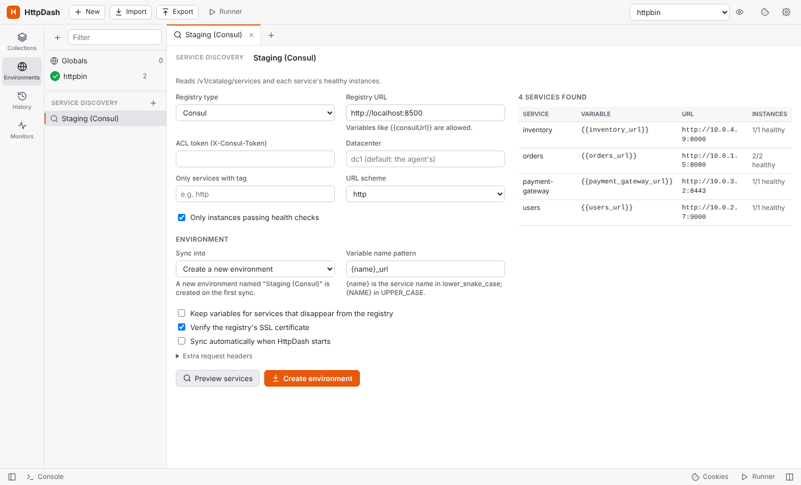

Service discovery (auto-create environments)
Point HttpDash at a service registry and it builds an environment with one variable per service. For example, {{orders_url}} = http://10.0.1.5:8080, so requests can use {{orders_url}}/api/orders.
To add a registry, open Environments in the sidebar and click Service discovery → +.
| Registry | What it reads |
|---|---|
| Consul | /v1/catalog/services plus each service's instances, only those passing health checks unless you untick it. Options: ACL token, datacenter, tag filter, http/https. |
| Eureka (Spring Cloud) | /eureka/apps, instances with status UP only unless you untick it. Uses each app's home page URL or its host and port. |
| Kubernetes | Services in a namespace (or * for all, named namespace_service), using a service-account bearer token and an optional label selector. The address can be the cluster DNS name, the cluster IP, the external LoadBalancer address, or Pods: every ready pod behind the Service, so requests can be spread over them and counted per pod (the other modes give one instance per service). |
| Custom JSON | Any endpoint returning a list of services or a { "name": "url" } map. You set the list path, the name field, and a URL field or template such as http://{host}:{port}. |
| OpenAPI document | The document's server becomes a base URL variable, and every operation becomes a request in a collection that follows the document (see below). |
- Preview services shows what would be created, without changing anything.
- Create environment makes the environment the first time.
- Sync to environment (or Re-sync on the environment, Sync now in the sidebar) updates the same environment in place: changed URLs are updated, new services are added, and services that vanished are removed (unless you tick "keep"). Variables you added yourself, such as API keys, are never touched, unless one has the same name as a discovered service.
- Variable names follow a pattern,
{name}_urlby default:{name}is the service name in lower_snake_case and{NAME}in UPPER_CASE, so{NAME}_BASEgivesORDERS_BASE. - Startup sync: each source can be set to sync automatically when HttpDash starts. An OpenAPI source only checks, and tells you when a new version is waiting.
- Settings: registry requests use your proxy settings, and SSL verification can be turned off per source. It starts off for Kubernetes, whose API servers often have self-signed certificates.

A collection for every discovered service
A Consul, Eureka, Kubernetes or custom JSON source can also build a collection for each service it finds, from the service's own OpenAPI (Swagger) document. Tick Also create a collection from each service's API document on the source, then sync:
- Where to look: each service's URL plus a path, tried in order until one returns an OpenAPI document, in JSON or YAML. Leave Where each service publishes it empty for the common ones:
/v3/api-docsand/v2/api-docs(Spring),/openapi.json(FastAPI),/swagger/v1/swagger.json(.NET) and/api-json(NestJS). Or list your own, separated by commas. A full URL works too. - What you get: one collection per service, with a request for every operation. The collection is named after the document's title, or after the service when the title is a framework default such as "OpenAPI definition". Requests use the service's own variable, such as
{{orders_url}}, so load balancing, traffic by instance and Compare apply, and spec warnings check them against the document. - Keeping up: each sync brings every collection in step with its service's current document, in the same way as an OpenAPI source: new operations are added, ones that left the document are removed unless you changed them, and your edits, scripts and tests are kept. The results table shows each service's collection, its version and what changed, or why it has none (no document, or the service didn't answer).
- At startup, if the source syncs automatically, only missing collections are created. Existing ones are updated when you sync by hand.
- Services that disappear keep their collection; the report lists them. A collection you delete is created again on the next sync, unless you untick the option.
- Safety: each service only gets a plain GET for its document. The registry's token and extra headers are never sent to the services.
OpenAPI documents, versioned
A source pointed at an OpenAPI (Swagger) document, JSON or YAML, keeps a collection with one request per operation. Each sync records the document's version and a fingerprint, so an unchanged document changes nothing. A new one is compared with the last: added, changed and removed operations are listed before anything is written, and you apply them when you're ready. Your own edits (values, scripts, tests, requests you added) are kept, and the report says where the document changed something you edited too.
Each operation's shape is kept as well, so a request, and each of its versions, is checked against the document. A banner says when the operation is gone or deprecated, a required parameter or field is missing, a value isn't one the spec allows, or it sends something the spec doesn't know.
Load balancing and traffic by instance
When a service has several instances, requests that use its variable can go to the first instance, each in turn (round robin) or a random one, in Send, the Runner and Monitors. Unhealthy instances are skipped. Behind a load balancer, set the instance header (such as X-Served-By) and requests are counted by the instance that answered.
The source's Traffic page shows, live, what each instance answered: requests, share, p50 and p95 times, status codes and connection errors. Slow and failing instances are flagged, and so are instances that left the pool. The latest requests are listed with the gap between them. Export the report to Excel, CSV, PDF, an image, an HTML page, Markdown or JSON.
Payloads
Give a request the variations it should be called with (typed in, or imported from CSV or JSON rows) and send them in turn or at random. Each payload has its own rotation over the instances. Traffic is counted per payload too, so a payload that is slow on every instance can be told apart from an instance that is slow for every payload. The same goes for network segments: By network segment appears when instances answer from more than one.
Compare instances
Compare, next to Send, sends the request to every healthy instance of the service in its URL (the source is synced again first), or to every address its host resolves to in DNS (round-robin DNS, Kubernetes headless services; this uses your own resolver and needs a direct connection, not a proxy). It compares the answers (status, headers and every field of a JSON body) and names the instance that answered differently, with each difference: X-Version 2.3.0 where the others say 2.4.1, a missing qty, a different state.
- Values that differ on every instance by nature (ids, timestamps, the instance's own name) are set apart, and can be ignored for the request with one click (
items[*].updatedAtcovers every item). - Headers that always vary, such as
Dateand request ids, are ignored. - Each instance's status, time, tests and address are listed, and Show opens its full answer.
- Any method but GET, HEAD and OPTIONS asks first, since it runs once per instance.